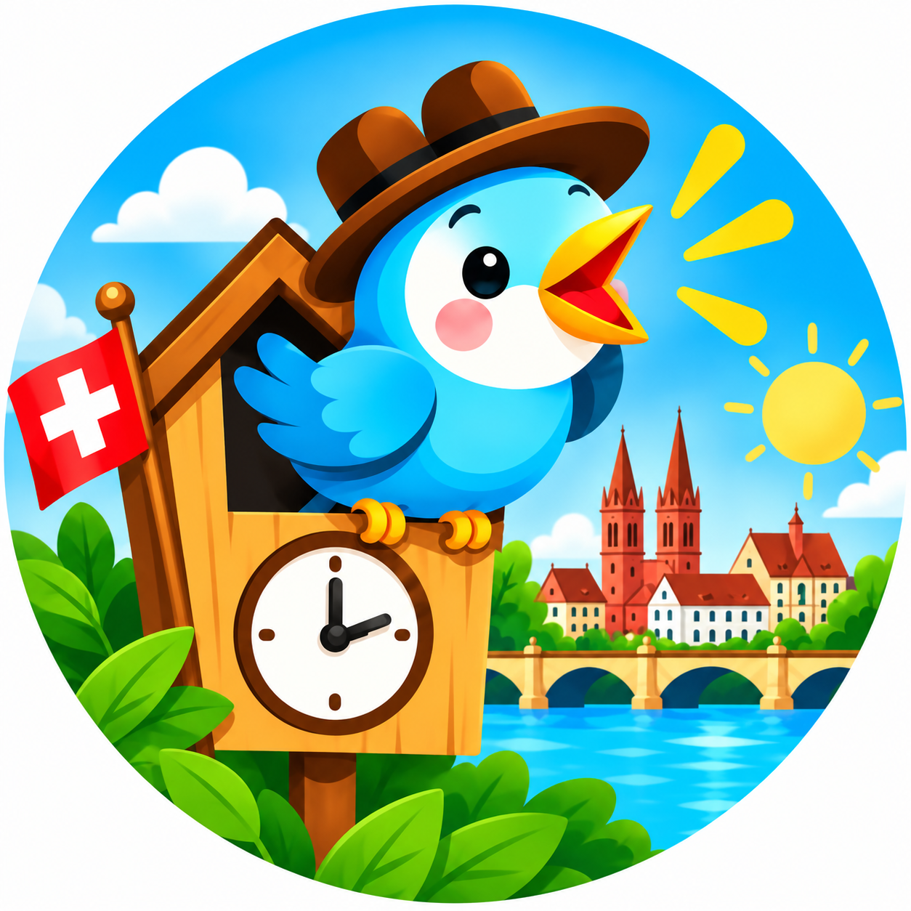

Price: Under 1 free; age 1 CHF 6; ages 2+ CHF 12
Age: 0–6 years
Indoor playground, toddler area, crawling space, family café, climbing

GUGU BaselFamily guides · Basel
16 curated ideas for families: discover rainy-day activities with kids in basel, with practical details, photos and official links.